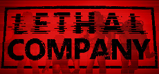

From Wikipedia, the free encyclopedia
Lethal Company is a cooperative video game developed by Zeekerss. It released in early access for Microsoft Windows in October 2023. Lethal Company gained popularity over the month of November 2023 on storefront Steam.
Players are tasked with collecting scrap from abandoned, industrialized moons, while having to avoid traps, environmental hazards, and monsters. They are contracted employees who work for "The Company" and are given three-day periods to meet the persistently increasing profit quota.
| Lethal Company | |
|  | |
| Developer(s) | Zeekerss |
| Engine | Unity |
| Platform(s) | Microsoft Windows |
| Release | October 23, 2023 |
| Genre(s) | Survival Horror |
| Mode(s) | Single-player, multiplayer |
Lethal Company is a cooperative video game for up to four players played in first-person perspective. Set in a retrofuturistic setting, players work as contracted employees of "The Company". They are able to communicate with each other through the in-game proximity chat, as well as proximity text chat. Players are tasked with visiting abandoned moons in order to collect as much scrap as possible. Each moon has one facility containing procedurally-generated rooms, alongside scrap, hazardous traps, and malicious creatures. Players must work quickly and return to their ship before midnight, or it will leave without them. Collected scrap is sold at the Company moon to obtain Company credits.[2][3] At the end of each deadline, if the players sell enough scrap to reach the required quota, they will begin another three-day cycle with a higher profit goal. Failure to meet the Company's quota results in players being ejected into space.[4]
Players may only carry four items at a time. Carriable equipment (such as flashlights or handheld-transceivers) and pieces of scrap consume one item slot each. Players can use the terminal console onboard their ship to purchase equipment and humorous ship accessories, such as a shower or toilet, using earned Company credits. The terminal may also be used to view the positions of other players, open security doors, or temporarily disable hazardous landmines and turrets inside the facility.[5]
The game offers eight playable moons, in addition to the Company's dedicated moon where scrap is sold. Each moon has a set difficulty level that dictates what types of creatures spawn, how many of those creatures will spawn, and how much scrap that can be collected. Three of these moons require a certain amount of Company credits to access to them.[6] Moons may randomly have dangerous weather conditions, such as flooding or solar eclipses, that hinder players' progress.[6][7]
There are 19 entities that players can encounter. Most are found inside the facility, but some will spawn on the outside surface of the moon. All indoor enemies, except the Spore Lizard,[8] will attempt to kill the player, though some will remain passive until provoked. Some facility enemies include the Thumper, a speedy two-legged land animal, and the Bracken, a humanoid that stalks and snaps the neck of its prey, but runs away when spotted.[9][10] One of the greatest threats in the game is the Jester, a creature inside a giant jack-in-the-box toy. It wanders harmlessly, until it stops and winds itself up over the course of just under a minute. After this time period, it will hunt down all players inside the facility unstoppably.[11]
Zeekerss previously developed games on the game creation platform Roblox.[12][13] Lethal Company was released in early access for Microsoft Windows on October 23, 2023.[12][14] Zeekerss says they plan to finish the game within six months.[15]
| Review Score | |
| Publication | IGN |
| Score | 7/10[2] |
Lethal Company has received critical acclaim on the online storefront Steam, topping the platform's Global Top Seller list and having 100,000 concurrent players in November 2023.[16][14][17] It has been compared to Phasmophobia.[18][19]
| Award | Date | Category | Result | Ref. |
| The Steam Awards | January 2, 2024 | Game Of The Year Better With Friends |
Nominated Won |
[20][21] |
Saver, Michael; Pung, Julia; Stanton, Devon (January 4, 2024). "Made with Unity: 2023 in review". Unity Technologies. Retrieved January 13, 2024.